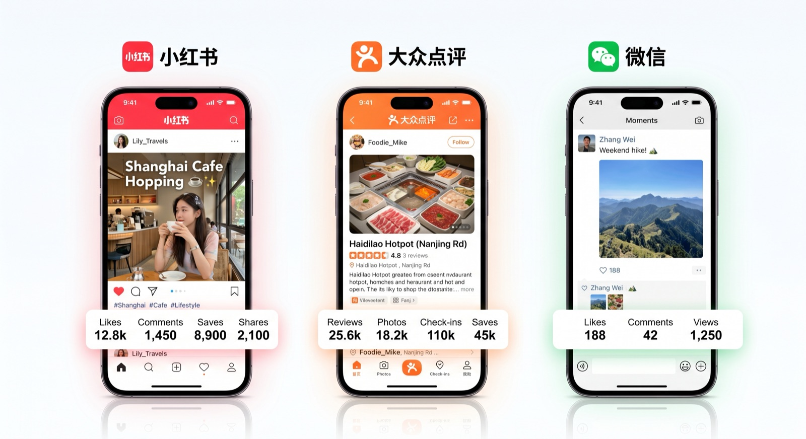

「インバウンド集客を始めたいけど、実際いくらかかるの？」——これは私たちがお客様から最も多くいただく質問のひとつです。
インバウンド集客の費用は、どのプラットフォームを使うか、どこまで自社でやるか、代行会社に依頼するかによって大きく異なります。本記事では、小紅書（RED）・大衆点評・WeChat・KOL起用・運用代行それぞれの費用相場を、PROTECHが透明性を持って公開します。
※本記事の料金はあくまでも市場相場の目安です。実際の費用は施策内容・規模・代行会社によって異なります。正確な見積もりはお問い合わせください。
インバウンド集客にかかる費用の全体像
インバウンド集客の費用は大きく「初期費用」と「月次費用（ランニングコスト）」に分かれます。まず全体像を把握しましょう。
| 施策カテゴリ | 初期費用目安 | 月次費用目安 |
|---|---|---|
| 小紅書（RED）運用代行 | 10〜30万円 | 10〜30万円/月 |
| 大衆点評 集客支援 | 5〜15万円 | 5〜15万円/月 |
| WeChat 公式アカウント開設・運用 | 10〜30万円 | 5〜15万円/月 |
| KOL/KOC施策 | — | 10〜500万円/件 |
| WeChat ミニプログラム開発 | 30〜200万円 | 1〜5万円/月（保守） |
| 中国語コンテンツ制作 | — | 5〜30万円/月 |
| インバウンド総合コンサル | 10〜50万円 | 10〜50万円/月 |
合計すると、本格的なインバウンド施策では月30〜100万円前後が一般的な予算感です。ただし、施策を絞り込めば月10万円以下から始めることも可能です。
小紅書（RED/小红书）の運用代行費用
小紅書は訪日中国人が旅行先を探す際に最もよく使うSNSです。アカウント運用代行にかかる費用の内訳を見ていきましょう。
① アカウント開設・初期設定費用
- アカウント開設代行：3〜10万円（日本企業名義での登録、プロフィール設定含む）
- 初期コンテンツ制作（投稿10本程度）：10〜30万円
- ブランドイメージ設計・世界観設定：5〜20万円
② 月次運用代行費用
- ライトプラン（月4〜8投稿）：10〜20万円/月
- スタンダードプラン（月8〜16投稿）：20〜40万円/月
- フルサポートプラン（月20投稿以上＋広告運用）：50万円〜/月
小紅書運用代行の月次費用に含まれる主な内容
中国語ライティング ／ 写真・動画編集 ／ ハッシュタグ最適化 ／ コメント返信・エンゲージメント管理 ／ 月次レポート作成 ／ アルゴリズム対策
大衆点評（Dianping）の費用相場
大衆点評は、店舗情報・口コミ管理が中心のプラットフォームです。小紅書に比べると費用が抑えやすく、まずここから始める事業者も多いです。
① 店舗登録・基本情報整備
- 店舗情報登録代行：3〜8万円（中国語翻訳・写真最適化含む）
- アカウント認証（商戸認証）サポート：2〜5万円
② 月次管理・口コミ対応
- 口コミ監視・返信代行：3〜8万円/月
- クーポン・キャンペーン設定：2〜5万円/月
- 競合分析・改善提案レポート：3〜8万円/月

KOL・KOC施策の費用相場
KOL（Key Opinion Leader）の起用費用は、フォロワー数や影響力によって大きく異なります。以下は一般的な相場です。
| KOLランク | フォロワー数目安 | 1投稿あたりの費用目安 | 特徴 |
|---|---|---|---|
| ナノKOC | 1,000〜1万人 | 0.5〜3万円 | エンゲージメント高・信頼性◎ |
| マイクロKOL | 1万〜10万人 | 3〜20万円 | 費用対効果が高い。最も人気 |
| ミッドティアKOL | 10万〜100万人 | 20〜100万円 | リーチ力と信頼性のバランス |
| マクロKOL | 100万人以上 | 100〜500万円以上 | 圧倒的リーチ・ブランド力向上 |
KOL施策では「1人の大物より複数のマイクロKOL」という戦略が、費用対効果・信頼性ともに高いとされています。初めての場合は予算20〜50万円でマイクロKOLを2〜5名起用するプランが多く見られます。
予算別：最適な施策の選び方
実際の予算規模別に、PROTECHが推奨する施策の組み合わせをご紹介します。
💚 月5〜15万円（スモールスタート）
- 大衆点評 店舗情報整備・口コミ管理
- 小紅書アカウント開設＋月4投稿の最小運用
- WeChat Pay の導入
💛 月15〜50万円（標準プラン）
- 小紅書 月8〜12投稿の本格運用
- 大衆点評 クーポン・キャンペーン管理
- マイクロKOL 1〜2名/月での口コミ施策
- WeChat 公式アカウント運用
💙 月50〜200万円（フルサポートプラン）
- 小紅書・抖音・大衆点評 3プラットフォーム同時運用
- KOL施策（月複数名）
- WeChat ミニプログラム開発・運用
- 中国語広告（モーメンツ広告・小紅書広告）
- データ分析・月次戦略レポート
費用を抑えながら成果を出す3つのポイント
① まず「受け入れ環境」を整える
SNSで集客する前に、WeChat Pay・Alipayなどのキャッシュレス決済対応や中国語メニューの用意を先に整えることが重要です。せっかく集客しても「キャッシュレス決済できない」では機会損失になります。この初期投資は5〜10万円程度で実現できます。
② 小紅書と大衆点評を同時に始める
小紅書で「認知・発見」を獲得し、大衆点評で「来店決定」を後押しする二段構えが最も費用対効果が高いです。月合計15〜25万円から実施可能で、インバウンド集客の基盤として最優先に構築を推奨します。
③ KOLは「量より質」で選ぶ
フォロワー数が多い大物KOLより、ターゲット層に刺さるニッチなKOC（Key Opinion Consumer）を複数起用する方が、費用対効果が高い場合が多いです。口コミの信頼性が高く、実際の来店につながりやすいためです。
代行会社を選ぶ際のチェックポイント
費用の透明性だけでなく、以下のポイントも確認して代行会社を選びましょう。
- 中国語ネイティブのスタッフがいるか：翻訳ツール頼りでは中国ユーザーに通じません
- 各プラットフォームの最新アルゴリズムを把握しているか：中国SNSは変化が速い
- 効果測定レポートを出してくれるか：月次でデータを共有してくれる会社が信頼できます
- インバウンド以外も対応できるか：決済・コンテンツ・システム開発まで一元対応できると効率的です
- 最低契約期間と解約条件：最低3〜6ヶ月契約が多いですが、条件を事前に確認
詳しくは小紅書運用代行を選ぶ際の7つのチェックポイントの記事もご参照ください。
まとめ：まずは「目的」と「予算」を明確にして始めよう
インバウンド集客の費用は、目的・プラットフォーム・施策の組み合わせによって大きく幅があります。大切なのは「何を達成したいか」「月にいくら投資できるか」を明確にしたうえで、優先順位をつけて始めることです。
PROTECHでは、初回無料相談で貴社の状況をお聞きし、予算・目標に合った最適なプランをご提案しています。「まず何から始めればいいかわからない」という段階でも構いません。お気軽にご相談ください。